2026-10-29｜真实浏览器证据。已完成本轮返修并停止，视觉效果待用户验收。科学冻结 59 文件保持不变；Chrome/Edge 共 47 项完整浏览器断言通过；192 个实际轨迹缓冲样本独立核验通过。
验收报告 · Chrome 测试原始数据 · Edge 测试原始数据 · 轨迹误差报告
录屏 41.56 秒，1920×1080 编码，源视口 2560×1440。包含实际浏览器操作；性能为本机回调与 GPU 计时，不等同于屏幕物理呈现率。
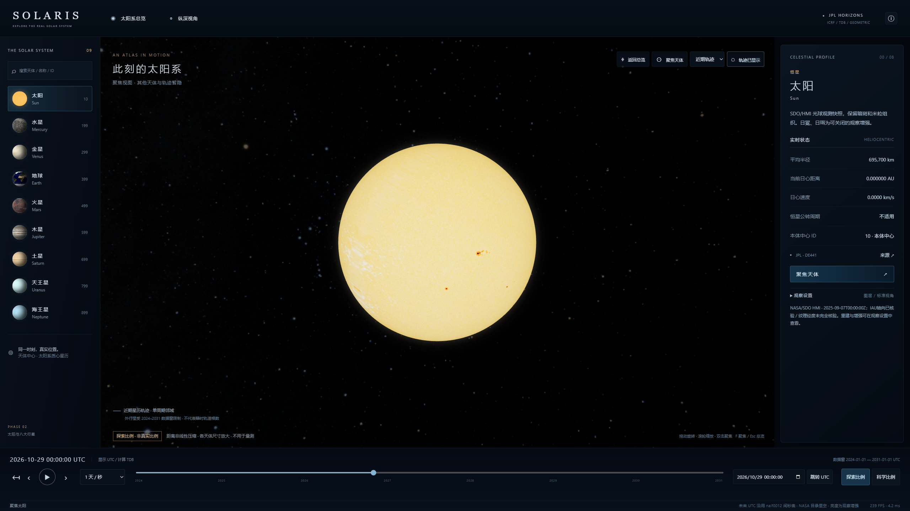
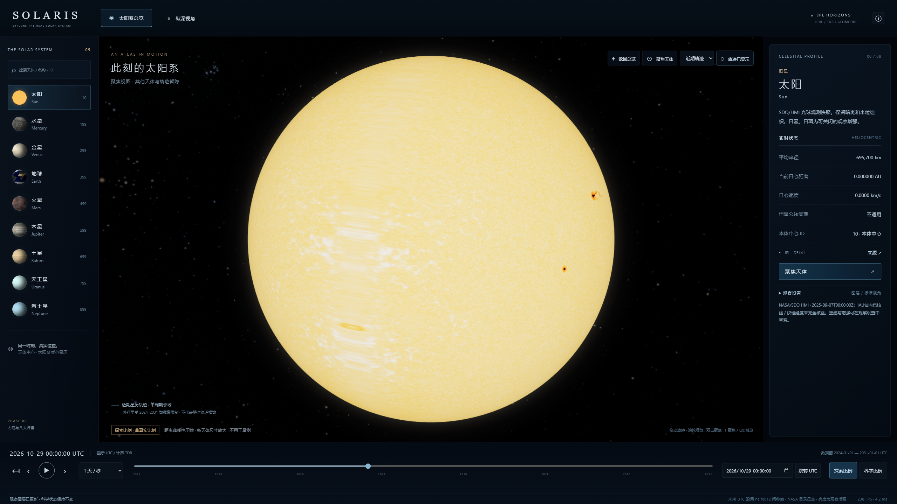
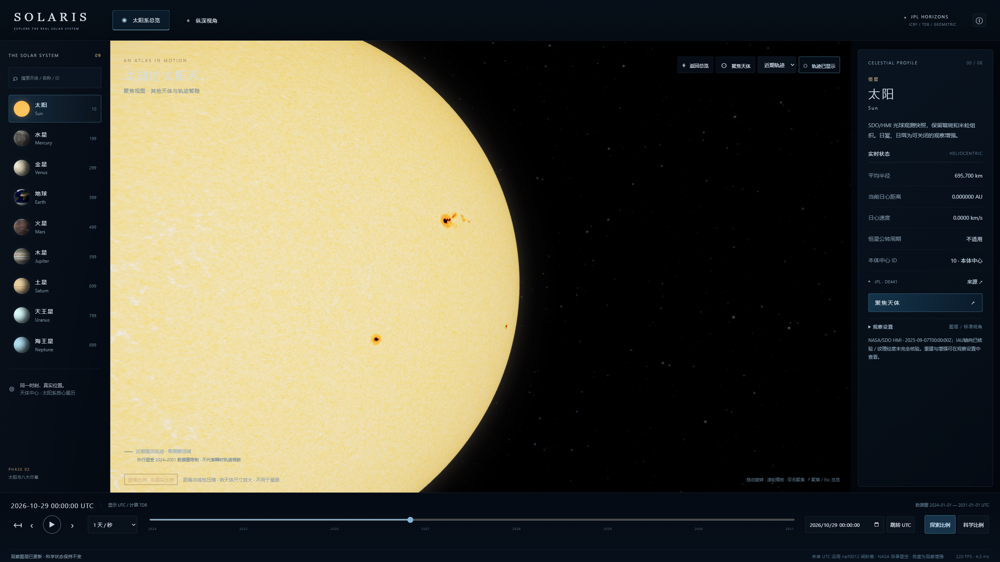
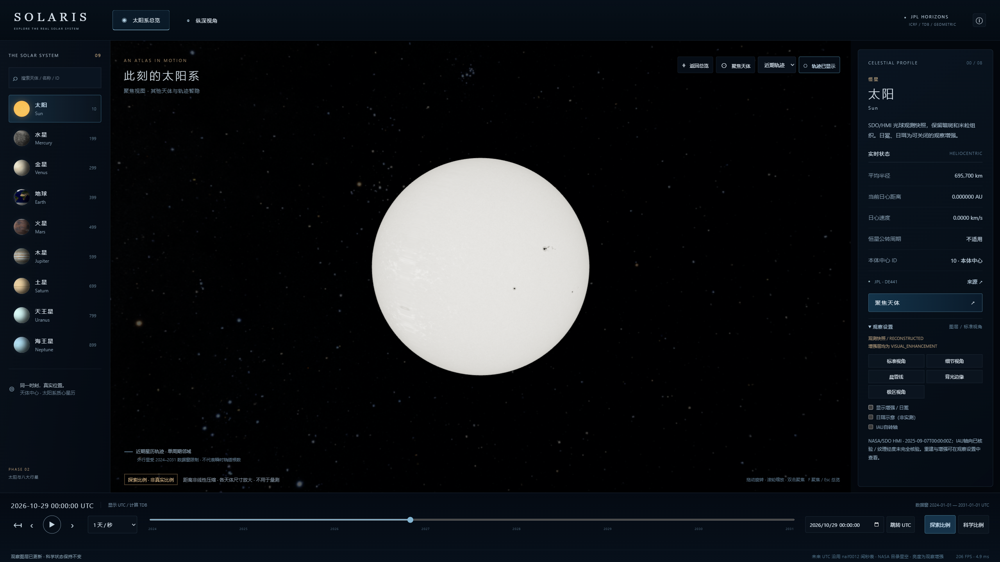
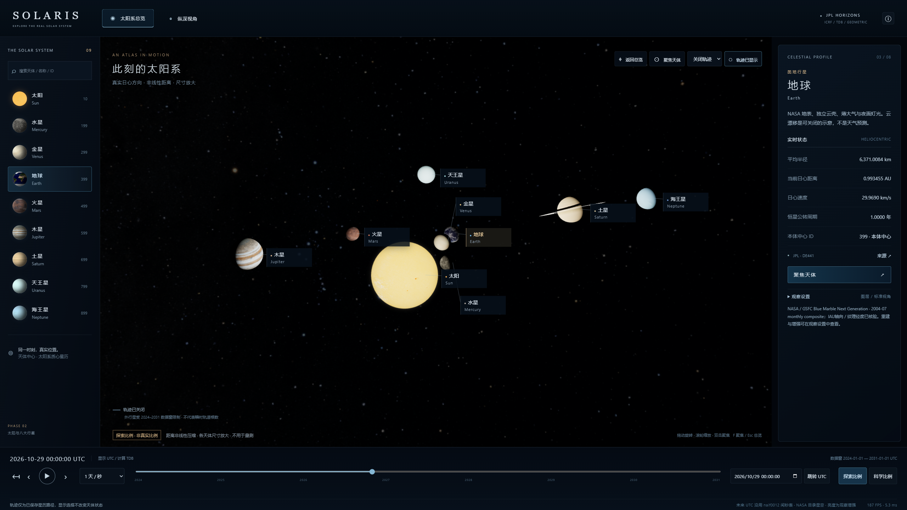
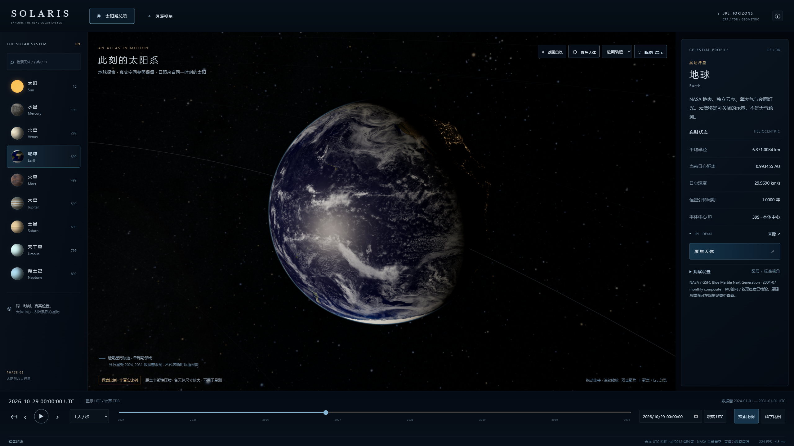
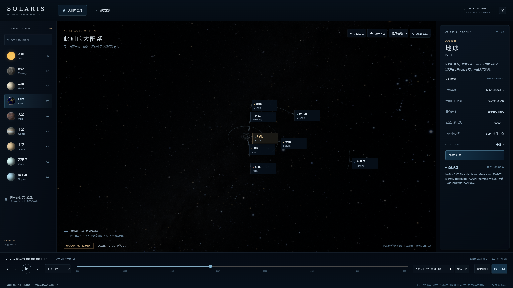
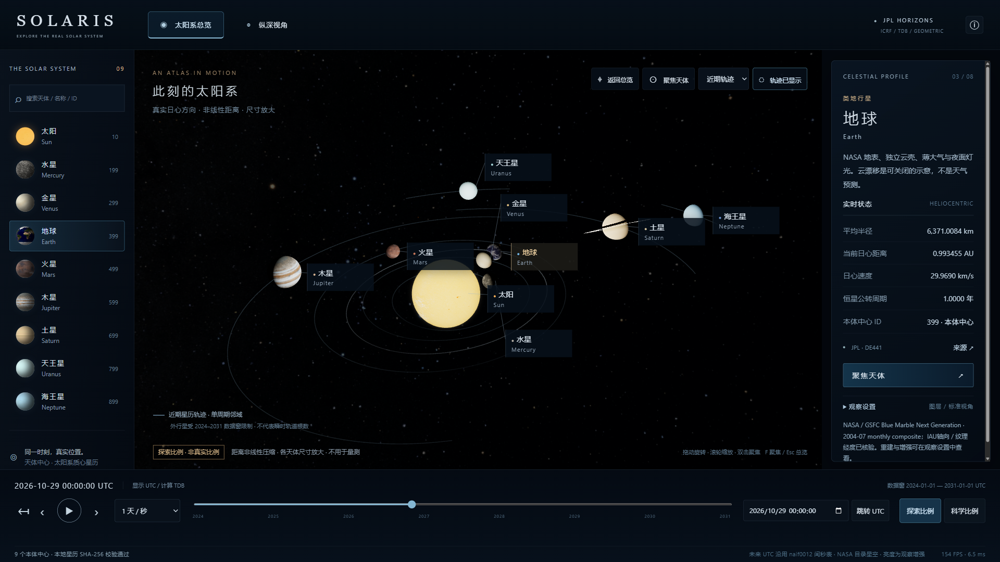
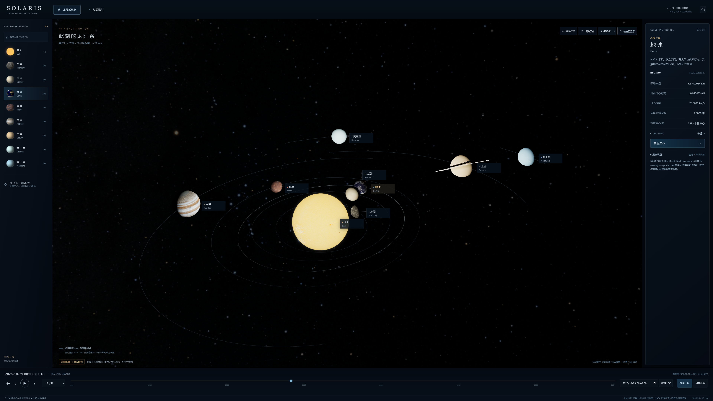
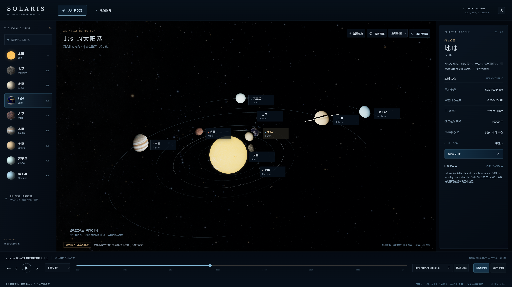
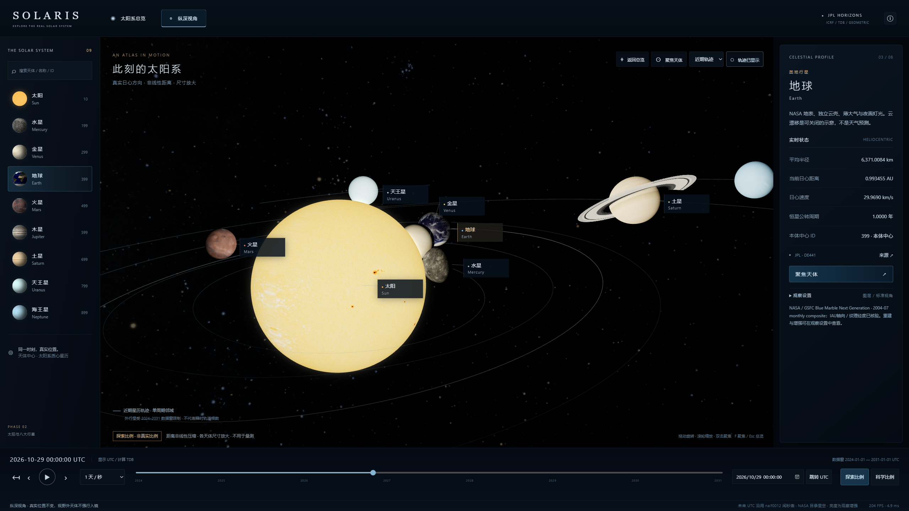
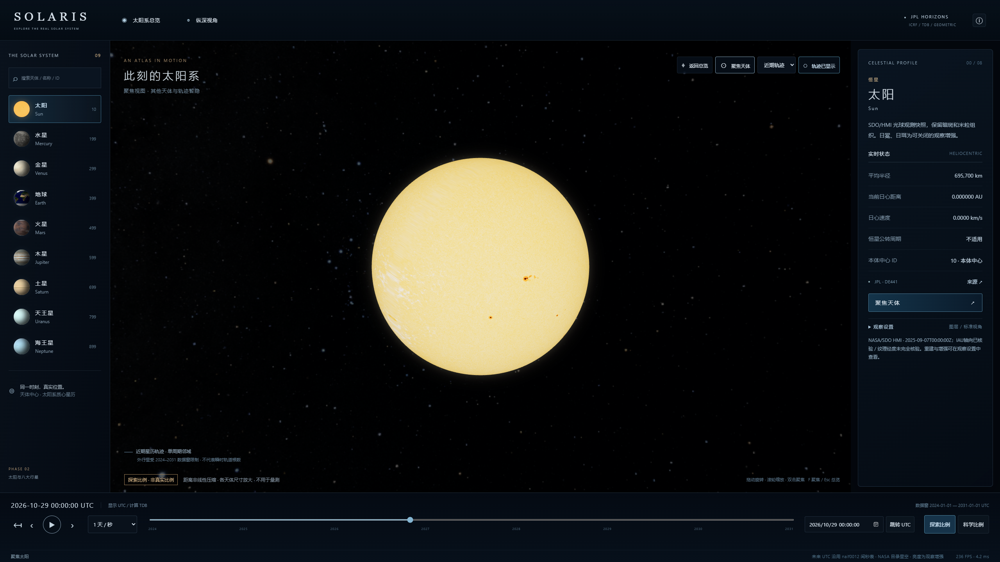
前图为第 2 期已有截图，后图为本轮新总览。同为 2026-10-29 UTC 初始日期；相机、标签和构图不同，不能用于逐像素材质误差比较。
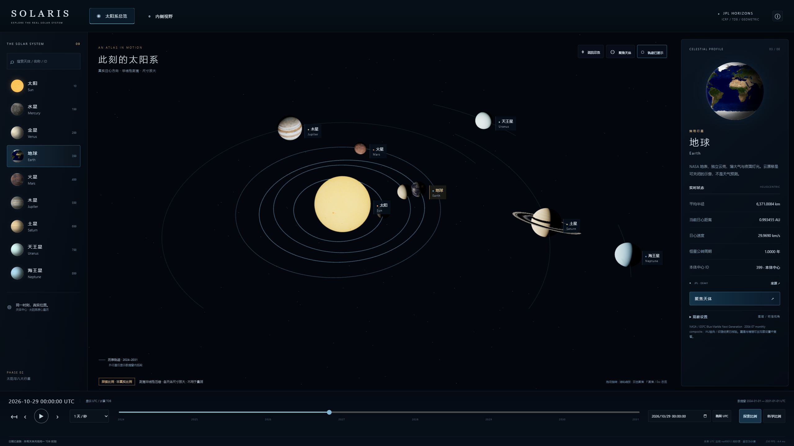
来源：NASA/JPL 星历、NASA/SDO HMI 光球、NASA SVS Deep Star Maps 2020。静态太阳影像、背面重建、星空显示压缩及分析式日冕的限制详见报告。没有使用概念图裁剪纹理。